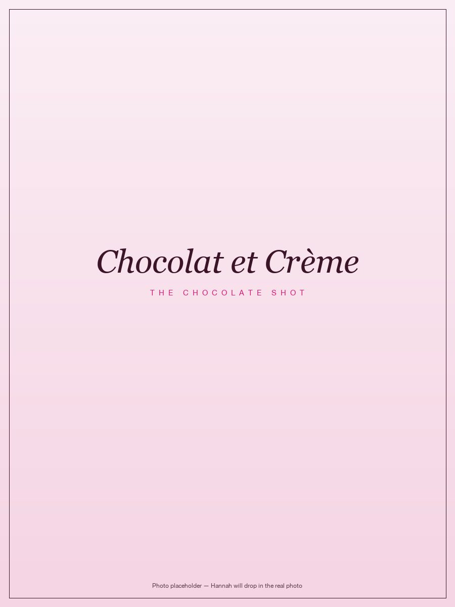
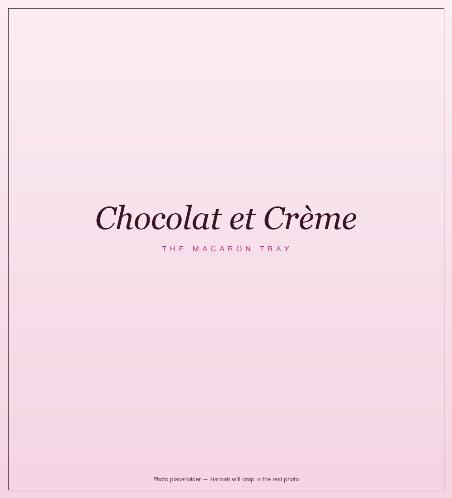

About the Founder
Hi, I'm Hannah.
Methow girl. Founder since twelve. Still climbing.
The work I do now is the latest pitch on a route I have been climbing my whole life. This is that story, in order.

Methow girl. Founder since twelve. Still climbing.
The work I do now is the latest pitch on a route I have been climbing my whole life. This is that story, in order.
Growing up, the rule in my parents' house was simple. You can have a sweet treat. But you have to make it yourself. And you have to clean up after yourself.
So I made every sweet treat I could imagine. Because I wanted to eat them.
By twelve, I was baking cakes from scratch. Cinnamon rolls. Macarons. Anything that sounded good. Eventually my parents pointed out that all this flour and butter and chocolate was costing somebody real money, and if I wanted to keep going I was going to need to start tracking it. Middle school math, suddenly applied.
That was the lesson that started everything. The first time I sold at the farmers market and learned that the money the customer hands you is not the money you actually made. You take the expenses out first. The yowch was real. My farmers market bottom line was not what twelve-year-old me thought it was.
So I leveled up. I called it Chocolat et Crème. I built a more reliable income, weekly dessert specials at Tappi, the local Italian restaurant in town. I made wedding cakes. I got my food handler's permit. I baked commercially out of a Washington-state-approved kitchen because that is what you have to do if you want to sell food to other humans legally. I also picked up an internship at Rocking Horse Bakery, getting in at 5:00 AM before school, because I figured if I was going to do this I should learn from someone who actually knew what they were doing.
I could not drive yet. My parents drove me to the bakery in the dark. Then I went to school. Then I played sports. Then I came home and did it again.


I tell you this not because I am still selling chocolate. I am not. I tell you this because Meraki Ascent did not start in February 2026. It started the first time I figured out how to make something, name it, price it, sell it, and account for what it actually cost me to do it. The consultancy is the latest pitch on a route I have been climbing my whole life.
When I was sixteen, I started a blog. I called it Skiing is Not Just Downhill. I wrote four posts and stopped.
I re-read them recently. They are about fear. About the climb. About what hard work actually costs you and what it gives back.
Here is what got me: the tags I picked for those posts, as a junior in high school, read like the Meraki Ascent brand book. Hard work pays off. Inspire. Learn. Trust. I was already writing in this voice. I just did not know yet that I would build a business around it.
The blog is discontinued. I am not adding to it. Sixteen-year-old me said what she needed to say, and the time stamp is part of the proof.
Ski racing. D1 Triathlon. College. Creating internships. Graduating. Immersed in an SF startup. Learning to sail. Getting laid off, and then watching that company go bankrupt. Living a true finance girly life. Moving states. Creating jobs for myself. Pivoting to what feeds me. Creating a role for myself at a top golf course. Living and documenting my journey out loud and publicly, through the messy, the raw, the real, the ups and the downs. Getting engaged. Announcing managing partner at Terra Axis investment firm. Creating a business of my own, Meraki Ascent, around the passions that drive me.
None of this was a summit or a finish line. Each is another step in the ever-evolving journey we call life.
The consulting practice I built around three things I deeply believe in: passion for the work, purpose in every connection, and progress that is measurable and real.
I do three things, and I do them with soul: Business Development. Investor Relations. Marketing. I sit at all three tables, and I speak founder, investor, and creative, fluently, in all three. That is rare. Sitting at all three tables with soul is rarer.
The social media side of the practice is built specifically for the businesses I grew up with, and the new ones I am watching grow now. If you are a values-driven business in Okanogan County building something worth sharing, I would love to be the person helping you share it. The investor relations side is anchored in a contracted partnership with Terra Axis, supporting their funds' IR and BD needs.
All of it is one practice. All of it is soul-led.
Read about Meraki Ascent →


This is me, off the clock. Skiing in the Methow Valley, sailing whenever the wind cooperates, on the trail with my dog Layla, or somewhere up a peak chasing whatever's next.
I don't have a professional version of me and a personal version. Same standards, same patience, same humor. The person you meet on a discovery call is the person you'd want next to you on a long climb. You'd just be on different terrain.
The outside is where most of my best thinking happens. Long days, long climbs, long stretches where the only thing to do is keep showing up. That patience travels. So does knowing when to push, when to wait, and when to just enjoy the view.
The businesses I'm proud to build with.
Recognition, features, and mentions across the years. A reminder that the practice didn't start yesterday.